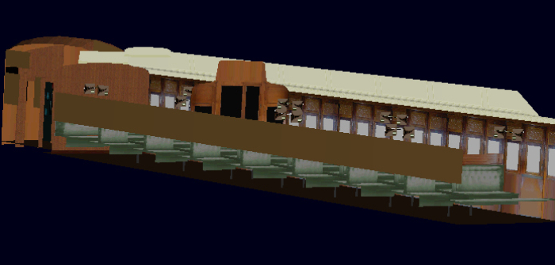

Often when testing TSM-built models in MSTS, we notice that when we look through the vehicle's windows, there is a lack of detail showing through the windows on the other side, as shown here. Note that the bottom part of the tree is not visible through the cab windows:
This takes place when we use alpha material for windows, to allow tinted glass. Problem is, as seen in the example above, if you wanted tinted glass, there was no way to see most of the detail on the other side. Before Polymaster, there were several ways of getting around this problem. The first way was to make the tinting so dark that it was hard to see any detail through the interior window. This is darkening the alpha. This would mean that lack of detail wasn't noticed, as shown below:
The second way to get around the TSM alpha transparency problem was to replace all alpha transparencies (Alpha material in TSM) with clear transparencies (Trans material in TSM). This is removing the alpha. This would mean that there was no tinting and the window was completely clear. Detail could be seen but it was as if there was no glass in the windows, as windows on rail vehicles are seldom clean enough to be completely clear.
Neither of these approaches really fixed the problem, and it was only with Polymaster that a solution could be found and applied.
Preparation Of The Model In TSM To Fix The Alpha Transparency Problem
In order for the Polymaster transparency fix to be applied, the model must first be prepared in TSM. As the problem concerns the windows, we have to look at inward-facing transparencies (windows) and outward-facing transparencies. We split all windows (and other surfaces - walls, floor, roof) into exterior (polys facing out, windows looking in) and interior (polys facing in, windows looking out).
As an example, here we see a screenshot of a model in TSM.
The exterior transparencies of this model (polys facing out, windows looking in) are shown here:
The interior transparencies (polys facing in, windows looking out) are shown here:
The solid internal detail of the model (such as seats and lights ) is shown here with the interior transparencies. The solid interior details are shown with the interior transparencies because these need to be sorted later in Polymaster, and are grouped together:
What we need to do, is set up the parent hierarchy, naming pattern and part materials of the model in TSM. This means that we can then use Polymaster to sort the order in which these parts are loaded in MSTS and remove the alpha transparency problem.
We start by creating a small part and name this Alphamain. This can be a single-poly part, and it can be hidden somewhere in the frame where it won't be seen. This part is parented to main and the material used is AphaNorm as shown when F2 is selected for Alphamain:
This is the part that all transparencies will be parented to. Here we find a problem. Anyone working with textures in MSTS soon learns that if 8-bit alpha textures are used, the quality of the textures is degraded. So, if we use tinted windows, the surrounding texture will not have the depth of colour and detail that clear window textures will have. So, if we want tinted windows, the surrounding body detail will not be as crisp as if we have clear windows.
One way to get around this is to use separate glass panels for the exterior windows. We can either have tinted rectangular panels which precisely cover every window, or we can have a tinted strip which sits just inside the windows. I choose the strips rather than having a tinted panel for each window. Shown in TSM, it looks like this:
In order to show where it goes, it is shown laid over the interior details of the model:

A simple way to lay out the exterior glass panel is to position it slightly inboard of the outside walls, doors and windows. This means that it will be seen through the windows, but it will not show on top of solid external parts, such as walls and solid doors.
The exterior glass panel is parented to Alphamain and the material used is Alphanorm+ as shown:

Having this glass panel means that If we do this, then the outside walls of the vehicle can have fully transparent windows (rather than tinted) to allow the textures to have more detail. The part will be parented to Main with the material being TransNorm:
Now that we have the outside windows covered, we move to the transparencies and detail on the inside of the car. I usually don't use alpha textures with tinted windows for the inside windows as this reduces the texture detail. I find that if the outside windows are tinted, we don't need to tint the inside ones, as the effect of a darker interior is done by the outside glass section. The interior transparencies (such as inside walls) are parented to Alphamain, and the material is AlphaHlfBrt- as shown:
Please Note: The use of AlphaHlfBrt for the interior transparencies and other internal details is because this model is of a passenger car with an interior which is lit up at night. If building a vehicle which has an interior that is not lit at night (such as a sheep wagon), then the material would be AlphaNorm-. On the Tait cars, I've had materials using HlfBrt for the passenger saloon but Norm for the driver and guard's compartment. This is because they're not lit at night. The important thing is to use Alpha+ for the outward facing but inward looking glass strip and Alpha- for the interior parts. This is necessary for the fix to work. Using HlfBrt material parts for the interior results in the car's interior being dimly lit up at night as shown (note the driver's cab is in not lit):
The internal details (that are dimly lit at night) such as ceiling, floor, seats, lights, luggage racks, etc are parented to Main and their material is SolidHlfBrt.
So, we've covered all of the parts that need to be sorted and given correct alpha materials to fix the alpha transparency problem. A simple diagram is included to show how windows and interior detail needs to be arranged:
Please note that in the above diagram, the spaces between the exterior and interior sides, roof and floor sections, (with the glass panel in between) has been increased for clarity. They can be quite close, only a point or so apart.
|
Checklist for this section
- Have I created an Alphamain part, which is parented to Main?
- Have I created an external glass part?
- Have I given all the external glass part and internal transparencies the Alphamain parent and the correct alpha+ or alpha- material?
- Have I parented all solid internal detail to Main?
- Have I given all solid internal detail the correct material, be it half bright(HlfBrt) or normal (Norm), depending on whether we want the car to be it up at night?
|